超导量子比特：基本知识
从LC电路到超导量子比特
我们首先考虑如何从经典的LC电路出发来实现量子比特。
经典LC电路的量子化
| 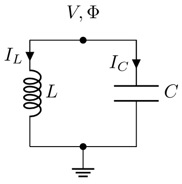 |
|---|
| 图 1. LC 经典电路 |
LC 电路最重要的元件是电感和电容，存储在这两个元件上的能量是： \[\begin{align*} \mathcal{H}&=\frac12 CV^2 + \frac12 LI_L^2 \\ &= \frac{Q^2}{2C} + \frac{\Phi^2}{2L}. \end{align*}\] 这里\(C\)是电容，\(L\)是电感，\(Q\)是存储在电容上的电荷，而\(\Phi\)是存储在电感上的磁通量。
我们知道处在简谐势中的粒子的 Hamiltonian 是 \[ H=\frac{p^2}{2m}+\frac{1}{2}m\omega^2x^2 \] 我们取如下的对应关系: \(m=C,p=Q,\Phi=x\) 与 \(\omega=1/\sqrt{LC}\)，那么这个 Hamiltonian 就会完全变成上述经典LC电路的Hamiltonian。因此，我们可以使用类似的量子化方法来对经典的 LC 电路进行量子化（严格的过程可以从拉格朗日量中慢慢推导出来）。我们首先将 \(Q\) 与 \(\Phi\) 变成算符，并且其满足对易关系 \([\hat{\Phi},\hat{Q}]=i\hbar\). 然后可以定义升降算符 \[ \begin{aligned} \hat{\Phi} &= \sqrt{\frac{\hbar}{2\omega C}} \left(\hat{a}+\hat{a}^{\dagger} \right) \\ \hat{Q} &= -i \sqrt{\frac{\hbar \omega C}{2}} \left(\hat{a}-\hat{a}^{\dagger} \right) \end{aligned} \] 于是 LC 电路的 Hamiltonian 就可以简单地表示为 \[ \mathcal{H}=\hbar \omega (\hat{a}^{\dagger}\hat{a} + \frac12) \] 其能谱就是间距为 \(\hbar\omega\) 的等间距能级，如图2.(b) 所示
| 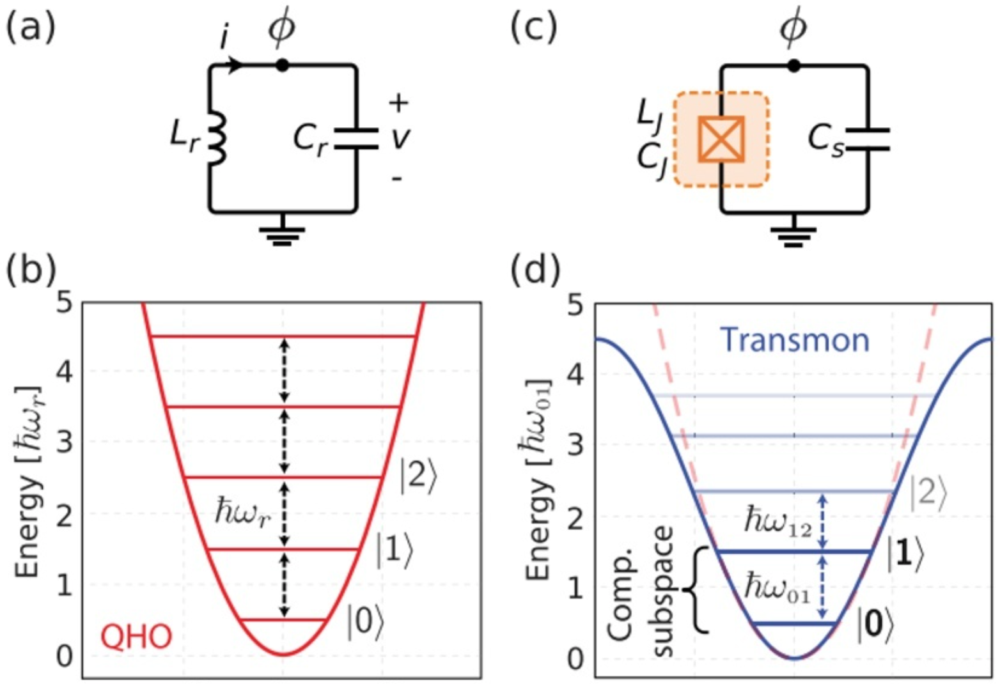 |
|---|
| 图 2. 经典LC电路量子化之后的能谱 |
构建量子比特
如果只是简单地将经典 LC 电路量子化，我们就会发现其能级是等间距的。因此如果我们将能量最低的两个态取做量子比特 \(|0\rangle\) 与 \(|1\rangle\)，并且将其耦合起来，实际上这个耦合会将量子比特与更上面的能级 \(|2\rangle, |3\rangle ...\) 也耦合起来，如上图(b)所示，这显然不是我们所希望的。因此，我们需要一种方法将能级给非线性化，使得 \(|0\rangle\) 与 \(|1\rangle\) 态之间的能量差 \(E_{01}\) 与其他能级之间的能量差不一样。而使得这一点成为可能的，就是约瑟夫森结。
| 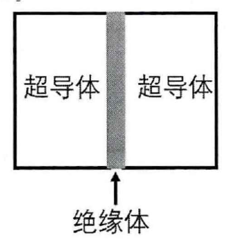 |
|---|
| 图 3. 约瑟夫森结 |
约瑟夫森结如上图所示，左右两边各有两块超导体，在其中间加入一块绝缘体将其隔绝开来。中间的薄绝缘体会形成一个势垒，而左右的超导体各自有一个破坏了 \(U(1)\) 对称性的宏观波函数，这两个波函数之间会有微弱的耦合，从而会导致其粒子数与相位发生演化，其演化方程如下所示： \[ \begin{align} I(t) &= I_c \sin(\phi(t)) \\ \frac{\rm{d} \phi(t)}{\rm{d} t} &= \frac{2 \pi V(t)}{\Phi_0} \end{align} \] 其中 \(\phi=\phi_\text{右}-\phi_\text{左}\) 是左右波函数的相位之差。根据这两个基本方程，我们就可以得到其中蕴含的能量是 \[ \begin{aligned} & \mathcal{U}_J=\int_{-\infty}^t I V d t=I_c \frac{\Phi_0}{2 \pi} \int \sin \phi d \phi \\ & =-I_c \frac{\Phi_0}{2 \pi} \cos \phi=-E_J \cos \phi \text {, } \end{aligned}\] 将 \(\cos\phi\) 做展开，除了二次项之外，会有更高阶的偶次项。而将这些高阶偶次项进行量子化，就可以得到四算符的形式： \[ \begin{aligned} E_J \cos \phi &= 1-\frac{1}{2} E_J \phi^2+\frac{1}{24} E_J \phi^4+\mathcal{O}\left(\phi^6\right) \\ \phi^4 &\propto a^{\dagger} a^{\dagger} a a \end{aligned} \] 这个非线性项，会使得能级不再线性地分布。如上图 (d) 所示，\(E_{01}\) 与 \(E_{12},E_{23}.....\) 等等完全不相等。这样的话，将最下面的两个态作为量子比特 \(|0\rangle\) 和 \(|1\rangle\) 就是安全的。
其实约瑟夫森结本身具有等效的电容与电感。两个被隔绝的超导体天然就是一个电容。而电感的来源，我们可以从约瑟夫森结的基本方程得到： \[ \frac{d I_J(t)}{dt} = I_0 \cos\phi \frac{2\pi}{\Phi_0} \cdot V(t) \] 所以电感强度就是 \(L_J=\frac{\Phi_0}{2\pi I_0 \cos\phi}\).
三种基本的超导量子比特电路
由上面的讨论我们知道，一般的超导量子比特电路基本上是由电容、电感、和约瑟夫森结所组成的。其哈密顿量就是由这简单的三项所构成的： \[ H=E_c \hat{n}^2 + E_L \frac{\phi^2}{2}-E_J \cos\phi \] 但我们可以对其稍微做一些变形，比如取掉电容或者电感之类的，就可以得到具有不同特性的超导量子比特电路。我们这里简单讨论一下变形所得到的三种典型电路：相位量子比特、电荷量子比特、与磁通量子比特。 由于约瑟夫森结的存在，会导致两种能量之间有竞争，一种是约瑟夫森耦合能 \(E_J=I_c\Phi_0/2\pi\)，另一种是电荷能 \(E_c=2e^2/C_J\). 以上三种超导量子比特的主要区别就在于约瑟夫森耦合能和电荷能之间的相对大小的不同。
| 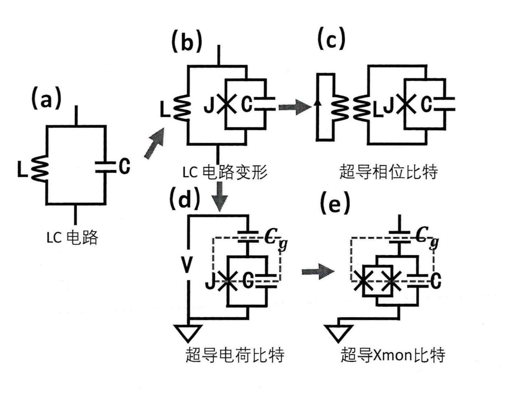 |
|---|
| 图 4. 超导量子比特电路的变形 |
| 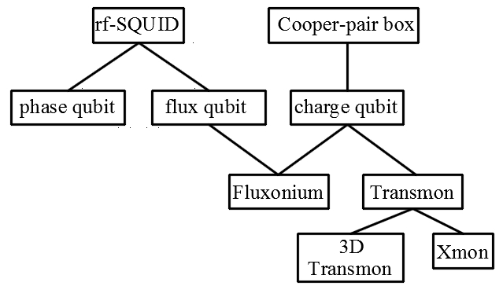 |
|---|
| 图 5. 超导量子比特的演变过程 |
相位量子比特
在上述的 Hamiltonian 中，可以将势能看做： \[ U = E_L \frac{\phi^2}{2}-E_J \cos\phi \] 我们取中等大小的电感，于是这个势能就相当于是一个抛物线加上一个余弦震荡所产生的坡，如下图所示，这个势能被称作“搓衣板势”。通过适当的参数控制，我们就可以使得某个小势阱中刚好容纳两个能级，这两个能级便可以作为量子比特 \(|0\rangle\) 与 \(|1\rangle\).
| 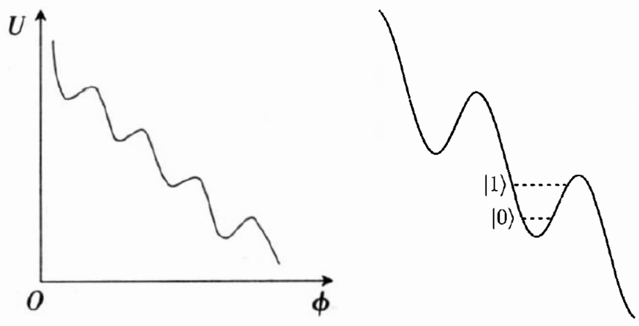 |
|---|
| 图 6. 搓衣板势与相位量子比特 |
电荷量子比特
如果我们把电感取到非常大 \(L\to \infty\)，也就是将电感替换为开路，如图 4(d) 所示。我们可以看到图中的虚线框其实与其他电路是断开的，形成了一个孤立的岛，被称作库伯对岛。这是因为虚线框只能通过约瑟夫森结来与外界交换电荷，而约瑟夫森结中只能流过库伯对，也就是说电荷只能成对地进出这座“孤岛”。而由于电感项被抹去了，只剩下了电容项和约瑟夫森项，哈密顿量就变成了 \[ H=E_c(\hat{n}-n_g)^2 - E_J \cos \phi \] 第一项加上了一个\(n_g\)，代表的是孤岛中库伯对的数量。我们可以通过外加门电压来调节岛上的电荷。由于岛上的电荷是量子化的，可以将其作为量子比特的态，如 图7.(c) 所示。
| 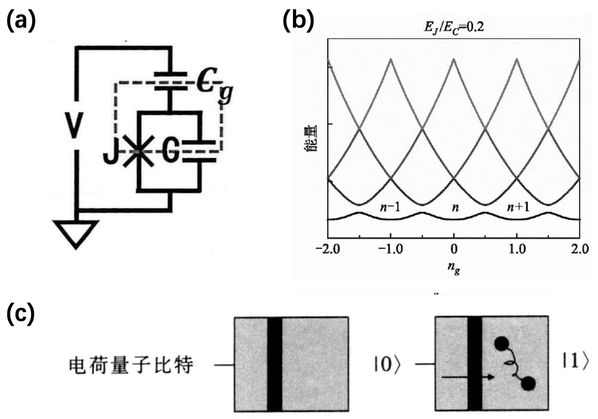 |
|---|
| 图 7. 电荷超导量子比特 |
磁通量子比特
先看一个超导量子干涉器件(SQUID)，如图 8(a) 所示，就是包含一个约瑟夫森结的超导环器件，被称作 rf-SQUID. 约瑟夫森结两端具有相位差：\(\phi/2\pi=\Phi/\Phi_0+z\), 其中 \(z\) 是整数，\(\Phi_0\) 是磁通量子。所以超导环的势能可以写作： \[ U=-E_J\cos\frac{2\pi\Phi}{\Phi_0} + E_L(\Phi-\Phi_{ext})^2 \] 其中 \(\Phi_{ext}\) 是外加的磁通。当外加磁通 \(\Phi_{ext}=\Phi_0/2\) 时，其势能曲线如图 8(b) 所示。粒子处于左右两个不同势阱的时候，就对应于 rf-SQUID 中的电流顺时针或者逆时针方向流动。因此这两个态就可以用来组成量子比特 \(|0\rangle\) 和 \(|1\rangle\).
| 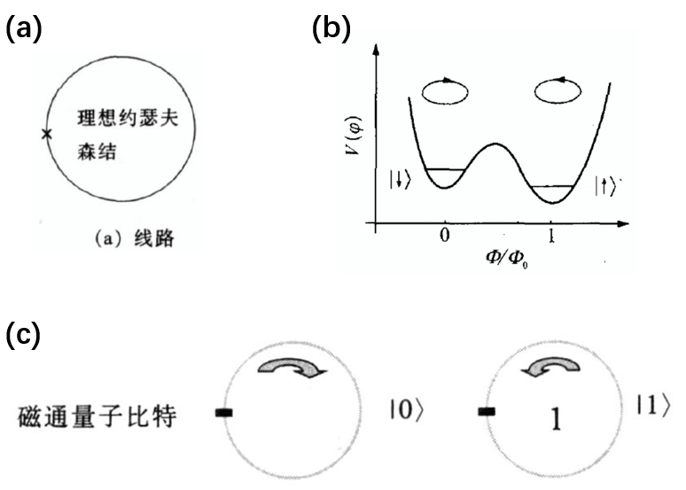 |
|---|
| 图 8. 磁通量子比特 |
单比特的操纵
Transmon量子比特的控制电路如下图所示，右边的线路为\(XY\)控制线，左边的是\(Z\)控制线。
| 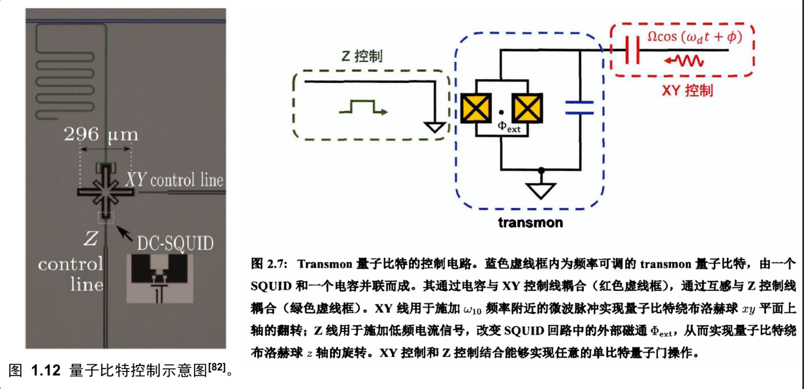 |
|---|
| 图 9. 量子比特的操纵 |
\(XY\)控制线通过电容与量子比特相连接，并且在线路上施加典型的余弦驱动电流 \(\Omega\cos(\omega_d t + \phi)\). 由于电容的耦合方式，就会产生如下所示的耦合Hamiltonian \[ \hat{H}(t)=-\frac{1}{2} \hbar \omega_{10} \hat{\sigma}_z+\hbar \frac{\Omega}{2}\left(\hat{b}^{\dagger} e^{-i\left(\omega_d t+\phi\right)}+\hat{b} e^{i\left(\omega_d t+\phi\right)}\right) \] 对此哈密顿量做旋波近似，就可以得到 \[ \hat{H}=\frac{1}{2} \hbar \delta_q \hat{\sigma}_z+\frac{1}{2} \hbar \Omega\left(\cos \phi \hat{\sigma}_x+\sin \phi \hat{\sigma}_y\right) . \] 通过定义方向矢量 \(\mathbf{n}=\left(\cos \phi, \sin \phi, \delta_q / \Omega\right)\), 系统的演化算符就可以写作： \[ \hat{U}(\mathbf{n}, t)=e^{-\frac{i \Omega t}{2} \mathbf{n} \cdot \boldsymbol{\sigma}} \] 另一方面，通过对 \(Z\) 控制线上施加电流来改变其外部磁通\(\Phi_{ext}\)，就可以调控 \(\omega_{10}\).
两比特之间的耦合
电容/电感耦合
| 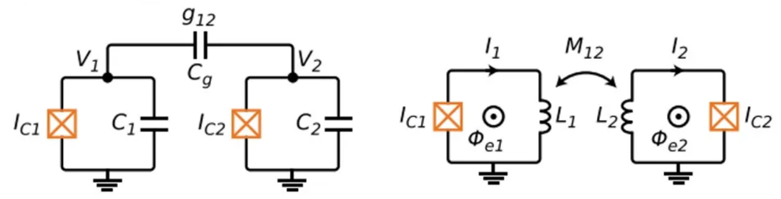 |
|---|
| 图 9. 两个超导量子比特通过电容或者电感来耦合 |
超导量子比特之间，或者超导量子比特与谐振腔之间的直接耦合，主要有两种方式：电容耦合或者电感来耦合。如图所示，其Hamiltonian可以写作 \[ \begin{aligned} &H=\sum_{i=1,2}\left[4 E_{C, i} n_i^2-E_{J, i} \cos \phi_i\right]+4 e^2 \frac{C_g}{C_1 C_2} n_1 n_2 \\ &H=\sum_{i=1,2}\left[4 E_{C, i} n_i^2+\frac{1}{2} E_{L, i} \phi_i^2-E_{J, i} \cos \phi_i\right]+M_{12} I_{c 1} \sin \phi_1 I_{c 2} \sin \phi_2 \end{aligned} \] Consider the quantized conditions \(n\propto i(a_i^\dagger - a_i)\) and \(\phi \propto (a_i^\dagger + a_i)\), then the coupling term can be written as \[ \begin{align} n_1 n_2 &= i(a_1^\dagger - a_1) \cdot i(a_2^\dagger - a_2) \\ &\approx a_1^\dagger a_2 + a_1 a_2^\dagger \end{align} \] 最后一步用到了旋波近似。电容所产生的耦合强度一般有\(g/2\pi \sim 20\)MHz，远小于量子比特的频率\(\omega_1\)与\(\omega_2\). 对于电感的耦合项也是类似的结果。
Coupler
| 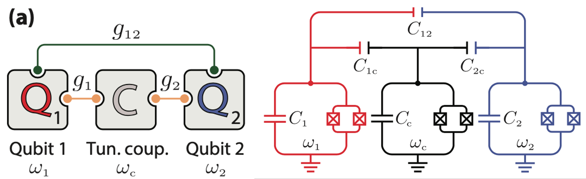 |
|---|
| 图 10. Coupler [1] |
还有一种操纵性更好的方式是 coupler，将两个超导量子比特 \(Q_1\) 与 \(Q_2\) 通过中间再加一个量子比特来进行耦合。其哈密顿量可以直接写作 \[ \begin{aligned} H & =\sum_{j=1,2} \frac{1}{2} \omega_j \sigma_j^z+\frac{1}{2} \omega_{\mathrm{c}} \sigma_{\mathrm{c}}^z+\sum_{j=1,2} g_j\left(\sigma_j^{+} \sigma_{\mathrm{c}}^{-}+\sigma_j^{-} \sigma_{\mathrm{c}}^{+}\right) \\ & +g_{12}\left(\sigma_1^{+} \sigma_2^{-}+\sigma_2^{-} \sigma_1^{+}\right) \end{aligned} \] 可以看到量子比特 \(Q_1\) 与 \(Q_2\) 之间有两个耦合通道：一个是量子比特之间直接的长程耦合 \(g_{12}\)，而另一个通道则是二阶的过程，通过中间量子比特来实现。因此，量子比特 \(Q_1\) 与 \(Q_2\) 之间的等效耦合就可以写作： \[ \widetilde{H}=\sum_{j=1,2} \frac{1}{2} \widetilde{\omega}_j \sigma_j^z+\left[\frac{g_1 g_2}{\Delta}+g_{12}\right]\left(\sigma_1^{+} \sigma_2^{-}+\sigma_2^{-} \sigma_1^{+}\right) \] 其中 \(\widetilde{\omega}_j=\omega_j+\frac{g_j^2}{\Delta_j}\) 是shift之后的能级。我们可以看到，现在 \(Q_1\) 与 \(Q_2\) 之间的等效耦合是 \(\widetilde{g}=g_1g_2/\Delta + g_{12}\)，因此我们可以通过控制 \(\Delta\) 和这几个耦合强度来调节等效的耦合强度 \(\widetilde{g}\)，从而可以将 \(\widetilde{g}\) 调节为正、负、或者零。
信息读出
| 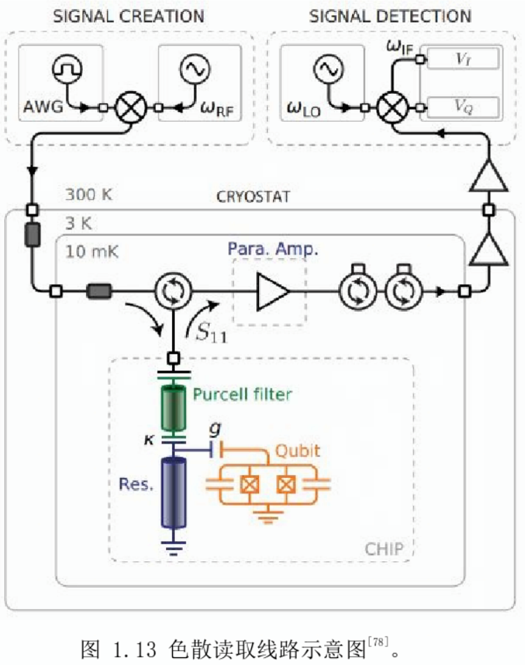 |
|---|
| 图 11. 非破坏性测量：色散读取 |
在超导量子系统中，想要读取量子比特的状态，有一种非破坏性的测量方法，叫做色散读取方法。在这种方法中，用一个光腔与量子比特进行耦合，可以得到一个哈密顿量： \[ H=-\frac{\omega_q}{2} \sigma^z+\omega_r a^{+} a+g\left(\sigma^{+} a+\sigma^{-} a^{+}\right) . \] 其中 \(a\) 是光子的湮灭算符。考虑失谐 \(\Delta\) 远大于耦合 \(g\) 的情况，再做一个幺正变换 \(\exp[−g(\sigma+a − \sigma− a^+)/\Delta]\)，就可以得到 \[ H=-\frac{\omega_q}{2} \sigma^z+\left(\omega_r+\frac{g^2}{\Delta} \sigma^z\right) a^{+} a . \] 从这个式子中就可以看到，光腔中光子的等效频率是与量子比特的状态相关的。如果量子比特处在 \(|1\rangle\) 态上，其光波频率就是 \(\omega_r+\frac{g^2}{\Delta}\). 如果量子比特处在 \(|0\rangle\) 态上，其光波频率就是 \(\omega_r-\frac{g^2}{\Delta}\). 因此通过对光波频率的测量，就可以非破坏性地知道量子比特的状态。
量子模拟
| 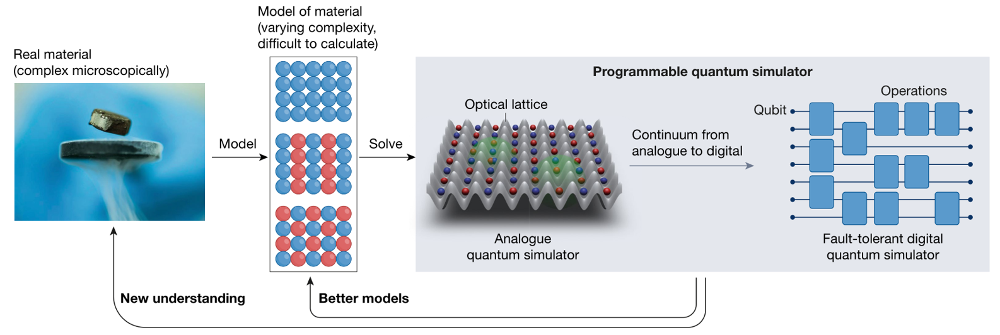 |
|---|
| Figure 12. Analogue simulation and digital simulation |
Analogue Simulation
- 缺点:
- 只能实现特定的模型，
- 没有错误编码和修正，而错误又是不可避免的。参数的矫正可能会有问题，实现的Hamiltonian也会不完美，还有退相干和噪音的干扰。
- [1] Yan, Fei, et al. "Tunable coupling scheme for implementing high-fidelity two-qubit gates." Physical Review Applied 10.5 (2018): 054062.
- [2] 刘伟洋,于海峰,薛光明等.超导量子比特与量子计算[J].物理教学,2013,35(07):2-5.
- [3] 董宁,王轶文,于扬等.超导量子比特的物理实现[J].自然科学进展,2008(07):721-726.
- [4] 宿非凡,杨钊华,范桁等.超导量子比特[J].大学物理,2021,40(07):1-7+11.DOI:10.16854/j.cnki.1000-0712.210045.
- [5] 徐达. 基于超导量子比特的量子模拟[D].浙江大学,2018.